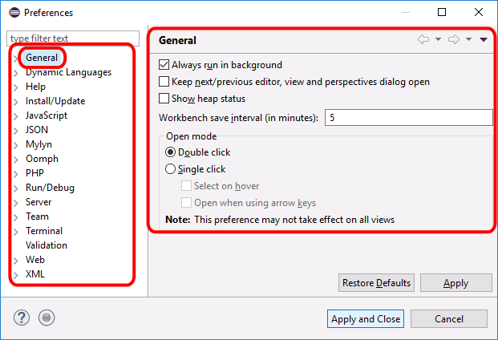

En esta lección se explica cómo configurar Eclipse for PHP developers (Eclipse PHP) como editor de archivos php, html y css.
Configuración del editor
Las preferencias de Eclipse se establecen mediante el menú "Window > Preferences", que abre la ventana de Preferencias.
En la parte izquierda de la ventana de Preferencias se muestran las secciones y subsecciones en que se organizan las preferencias. Al hacer clic en alguna de las secciones, en la parte derecha de la ventana se muestran las opciones correspondientes.

Navegador
Desde Eclipse se puede abrir un archivo en el servidor local y visualizarlo en el navegador interno de Eclipse PHP, en el navegador predeterminado del sistema o en un navegador determinado. Yo recomiendo elegir el navegador predeterminado del sistema (y que sea Firefox ;-).
Para ello, en la ventana de Preferencias, sección "General > Web Browser", elija la opción "Use external web browser" (navegador externo a Eclipse) y marque la casilla ", "Default system web browser".
Elegir estilo PSR-2
En estos apuntes se sigue y recomienda seguir las recomendaciones de estilo PSR-2, como se explica en la lección Guía de estilo PHP.
Eclipse PHP permite formatear el código de acuerdo con esa recomendación.
Para ello, en la ventana de Preferencias, sección "PHP > Code Style > Formatter", cambiar el perfil activo a "PSR-2".
Además en la ventana de Preferencias, sección "General > Editors > Text Editors",
Marcar la opción "Insert spaces for tabs" (insertar espacios en vez de tabuladores) y comprobar que el valor "Displayed tab width" (tamaño del sangrado) sea 4. Así, cada vez que se pulse la tecla Tabulador, Eclipse escribirá 4 espacios en blanco.
Marcar la opción "Show print margin" (mostrar márgenes de impresión) y comprobar que el valor "Print margin column" (posición del margen) sea 80.
Juego de caracteres y finales de línea
Las recomendaciones de estilo PSR-2 recomiendan utilizar el juego de caracteres UTF-8 y finales de línea Unix.
Para ello, en la ventana de Preferencias, sección "General > Workspace", se deben cambiar los valores "Text file encoding" y "New text file line delimiter" a UTF-8 y Unix, respectivamente:
En la ventana de Preferencias, sección "Web > HTML Files", se deben cambiar el valor "Encoding" a ISO 10646/Unicode(UTF-8):
En la ventana de Preferencias, sección "Web > CSS Files", se deben cambiar el valor "Encoding" a ISO 10646/Unicode(UTF-8):
Espacios en blanco al final de las líneas
Eclipse puede borrar automáticamente los espacios en blanco que se encuentran al final de cada línea.
Para ello, en la ventana de Preferencias, sección "PHP > Editor > Save Actions", hay que marcar la casilla "Remove trailing whitespace" y el botón radio "All lines":
Sangrado en archivos HTML y CSS
En la ventana de Preferencias, sección "Web > CSS Files > Editor", los cambios que aconsejo con respecto a los valores predeterminados son los siguientes:
Seleccionar el botón radio "Ident using spaces"
Aumentar a 2 el valor de "Indentation size".
Seleccionar el botón radio "Lowercase" de Capitalization style > Identifier.
En la ventana de Preferencias, sección "Web > HTML Files > Editor", los cambios que aconsejo con respecto a los valores predeterminados son los siguientes:
Seleccionar el botón radio "Ident using spaces"
Aumentar a 2 el valor de "Indentation size".
Asistentes de escritura
Al escribir comillas, llaves, paréntesis, corchetes, etc, en fragmentos de código PHP, Eclipse los cierra automáticamente. Si se quiere desactivar ese comportamiento, en la ventana de Preferencias, sección "PHP > Editor > Typing", los cambios que aconsejo con respecto a los valores predeterminados son los siguientes:
Desmarcar la casilla ""Strings""
Desmarcar la casilla "(Parenthesis) and [square] brackets"
Desmarcar la casilla "{Braces}"
Desmarcar la casilla "phpDoc and comment regions"
Desmarcar la casilla "Close PHP tag (?>)".
Desmarcar la casilla "Add 'php' after PHP start tag (<?)
Nota: No tengo claro para qué sirve la casilla "Tab key indents the current line", porque parece que funciona igual marcada que sin marcar.
Al escribir etiquetas o comentarios en fragmentos de código HTML, Eclipse los cierra automáticamente. Si se quiere desactivar ese comportamiento, en la ventana de Preferencias, sección "Web > HTML Files > Editor > Typing", los cambios que aconsejo con respecto a los valores predeterminados son los siguientes:
Desmarcar la casilla "Insert a matching end tag"
Desmarcar la casilla "Automatically close the tag"
Desmarcar la casilla "Comments"
Desmarcar la casilla "Attribute values"
Desmarcar la casilla "(Parentheses) and [square] brackets"
Desmarcar la casilla "End tags when creating empty self-closing tags"